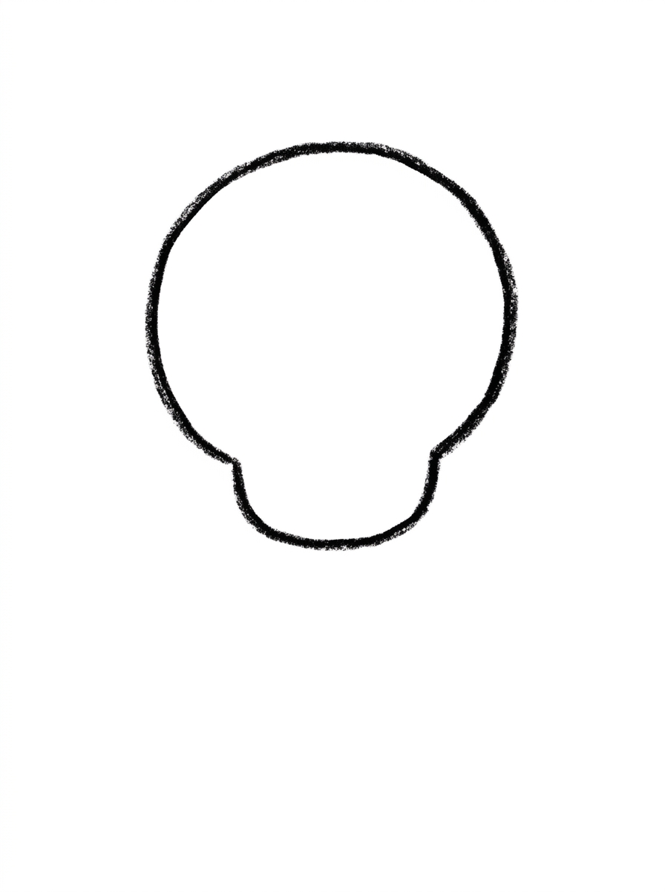
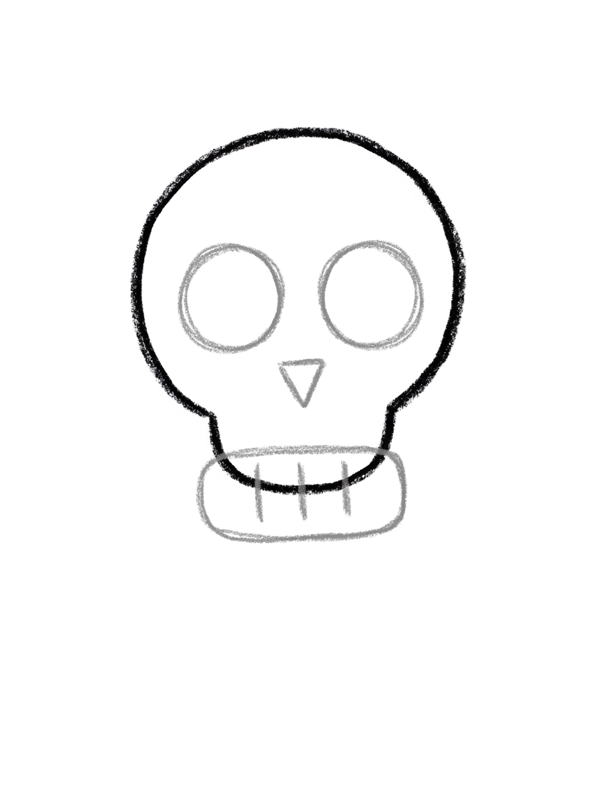
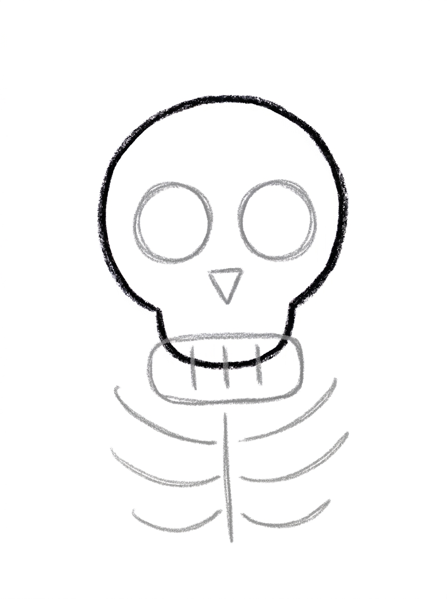
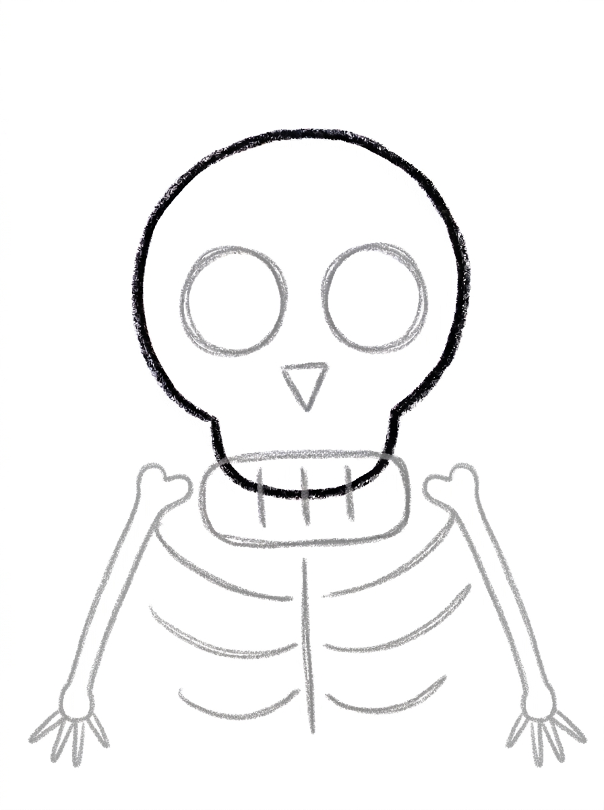
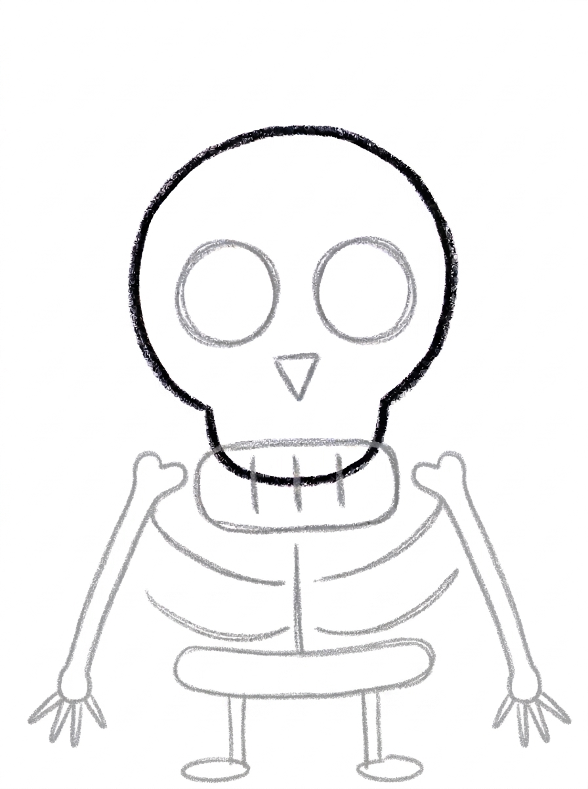
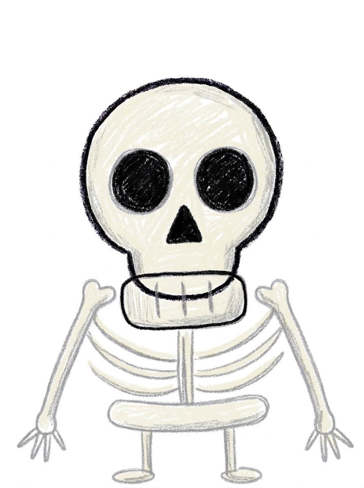

Skeleton Drawing for Kids How to Draw A Skeleton in 6 Easy Steps
Quick Answer
Draw a skeleton in six easy steps: start with one big rounded skull, add circle eye sockets, a triangle nose and a jaw, curve three ribs down each side of the spine, add arm bones, then a pelvis band and leg bones, and color it in. Made for ages 3 and up — no signup needed, just print and draw.
At a Glance
- Subject: How to draw a skeleton
- Ages: 3+
- Steps: 6 steps
- Time: ~15 min
- Difficulty: Easy
- Supplies: Paper, crayons
A skeleton sounds spooky, but this one is all smiles — kids love that it is built like a puzzle of simple shapes they already know. A big rounded skull, two circles for eyes, curved lines for ribs, and straight bones for arms and legs turn into a wiggly, friendly skeleton in just six steps.
✏️ Draw Your Skeleton in 6 Easy Steps
One step per box — this step by step skeleton drawing shows each new part in a different color so kids can see exactly what changed.
Step 1: The Skull

Draw one big rounded shape in the upper middle of your paper, like a circle with slightly flattened sides. This is the skeleton's skull.
Step 2: The Face

Draw two big circles side by side inside the skull for the eye sockets, and one small upside-down triangle between and below them for the nose. Under the skull, draw one wide rounded rectangle touching it for the jaw, with three short lines inside it for the teeth.
Step 3: The Spine and Ribs

Draw one short line down from under the jaw. Then draw three curved lines on each side of it, curving out and down — these are the ribs.
Step 4: The Arms

Draw one long thin arm bone angling down from the top rib on each side. At the bottom end of each arm, draw three short finger lines.
Step 5: The Pelvis and Legs

Draw one wide rounded band under the ribs, touching the bottom of the spine line — this is the pelvis. Then draw two leg bones hanging down from the band, each ending with one small oval for a foot.
Step 6: Color It In

Color your skeleton! All the bones in off-white with a little light gray shading, the eye sockets and nose in solid black, and the teeth lines in gray. Great drawing!
📊 Skeleton Drawing by Age
Every age can join in — just adjust the job.
| Age | What they can do | Tip |
|---|---|---|
| 3-4 | Draw the big skull, the two eye circles, and color the bones in at the end. | Draw the skull nice and big so the eye sockets fit inside easily, and let wobbly ribs be part of the fun. |
| 4-5 | Add the triangle nose, the jaw with teeth lines, and count out three ribs on each side. | Count the ribs out loud together — three curves per side is a great early counting moment. |
| 6+ | Complete all six steps, keep the ribs even on both sides, and add light gray shading to the bones. | Encourage them to add extras like a hat or a wave so one arm bends up. |
🖨️ Download Your Free Skeleton Drawing Printable
The printable lays out all 6 steps one per box, big enough for little hands — kids draw right alongside each step.
⬇️ Open Free Printable 🖨️ Print🎁 Free printable for ages 3+
💀 Skeleton Dance Party
Once the first skeleton is standing tall, turn the page into a dance party. Draw two or three more skeletons next to it and give each one a different pose — arms up, arms out wide, one leg kicked to the side. Add music notes, a moon, and a few stars around them, and your child has a whole Halloween dance floor made from the same six simple steps.
What You'll Need to Draw A Skeleton
You only need a pencil, an eraser, and the printed tutorial page showing all six steps. For coloring, off-white and light gray crayons or markers make the bones look real, plus a black crayon for the eye sockets and nose. If your child wants a sillier skeleton, keep a few bright colors nearby too — rainbow bones are always welcome.
What They're Learning
This tutorial practices the shapes hiding inside a skeleton: a big rounded shape for the skull, circles for the eye sockets, an upside-down triangle for the nose, a rounded rectangle for the jaw, and curved lines for the ribs. Kids also practice symmetry — three ribs curving out on the left and three matching ribs on the right — plus counting as they check that both sides have the same number of bones.
Make It Yours
Once the basic skeleton is easy, try a pirate skeleton with a triangle hat and an eye patch over one socket, a dancing skeleton with bent arms and one leg kicked out, or a friendly skeleton waving hello. Kids also love adding a bow tie under the jaw, coloring the bones in rainbow stripes, or drawing a whole skeleton family with a tall one and a tiny one holding hands.
🛒 Our Favorite Drawing Supplies
These are the supplies we reach for in our own home — washable (because kids), quality paper, and enough colors to avoid fights.
As an Amazon Associate, MomYouNeedThis earns from qualifying purchases — at no extra cost to you.
💡 Skeleton Drawing Tips for Parents
Step 3, the ribs, is the step that takes the most patience: three curved lines on each side of one short spine line. If the curves come out uneven, that is completely fine — real ribs are not perfect either, and the skeleton still reads clearly. Counting 'one, two, three' on each side as they draw helps kids keep both sides balanced without worrying about matching them exactly.
Start the skull high and big, in the upper middle of the page, so there is plenty of room below for the ribs, pelvis band, and legs. If space runs short, the leg bones in this tutorial are meant to be short — the finished skeleton has cute big-head proportions, so a snug fit at the bottom is not a mistake.
💀 Skeletons in the Real World
Underneath every person is a skeleton of more than two hundred bones — 206 in a grown-up — holding us up, protecting the soft parts, and anchoring every muscle we move with. The skull in this drawing guards the brain; the ribs form a cage for the heart and lungs; and the longest bone in the body, the thigh bone, is in the legs your child draws last.
Bones are not dead scaffolding — they are alive, growing and repairing themselves constantly, and children's bones are still busy lengthening every year. A Halloween skeleton is the cartoon of a real machine your child is wearing right now. That fact lands wonderfully somewhere around step three.
✋ Warm-Up: Rib Curves
Warm up with the skeleton's geometry of opposites: circles for joints, and curves for ribs. Draw a vertical line and hang three rainbow arcs off each side — smaller toward the bottom — like a tiny ribcage in training. Then joints: circles at the ends of short lines, over and over, an elbow-and-knee factory.
Uneven ribs are not just fine, they are educational — real ribcages are not perfectly symmetrical either. The place to spend care is the skull's roundness, because round is what makes it read as a head instead of a box; one slow circle beats three fast ones.
📖 Give Your Skeleton a Story
A skeleton out of its body is up to something — dancing, usually, in the long tradition of skeleton art that treats them as cheerful reminders to enjoy being alive. What is yours celebrating? A dictated sentence under the drawing ('Sir Rattles performs nightly') gives the bones their stage name, and skeletons with stage names demand encore drawings.
The ghost tutorial is the skeleton's partner in haunting: the outside with no inside, after the inside with no outside. Together they complete the Halloween set — and confuse nobody at all.
❓ Skeleton Drawing FAQs
What is the easiest way to draw a skeleton for kids?
Start with one big rounded skull, then build down: circle eye sockets and a triangle nose, curved rib lines, thin arm bones, and a pelvis band with two leg bones. Six simple steps keep it manageable.
What age is this skeleton drawing for?
It is made for ages 3 and up. Younger kids can do the skull, eyes, and coloring with a little help, while older kids can manage the ribs and finger lines on their own.
What supplies do we need?
Just a pencil, an eraser, and crayons or markers. Off-white, light gray, and black cover the classic bone look, but any colors work.
Is the printable really free?
Yes — every printable on MomYouNeedThis is 100% free to download and print. No signup, no payment, just tap the download button.
How do I print the skeleton tutorial?
Print at 100% scale, not 'fit to page', so the step pictures stay their true size. Regular letter paper works perfectly.
Why does this skeleton have such a big head?
The big skull and short leg bones give it cute, kid-friendly proportions, and the large head leaves plenty of room for the eye sockets, nose, and jaw that make the face read clearly.
What if the ribs come out uneven?
Uneven ribs are completely fine — the skeleton still looks right, because the eye reads the three curves on each side as a group. Counting one, two, three per side helps kids keep them roughly balanced.
Can we use the finished skeleton as a Halloween decoration?
Yes — cut it out and hang it in a window, or draw a row of skeletons holding hands for a garland. The friendly face keeps it fun rather than scary for little ones.
📚 Keep Exploring
- ✏️ All 76 Drawing Tutorials 76 free step-by-step drawing tutorials for kids.
- 🎃 Halloween Coloring Free printable Halloween coloring pages for kids.
- ✏️ Drawing Practice Free printable drawing pre-writing worksheet for toddlers.